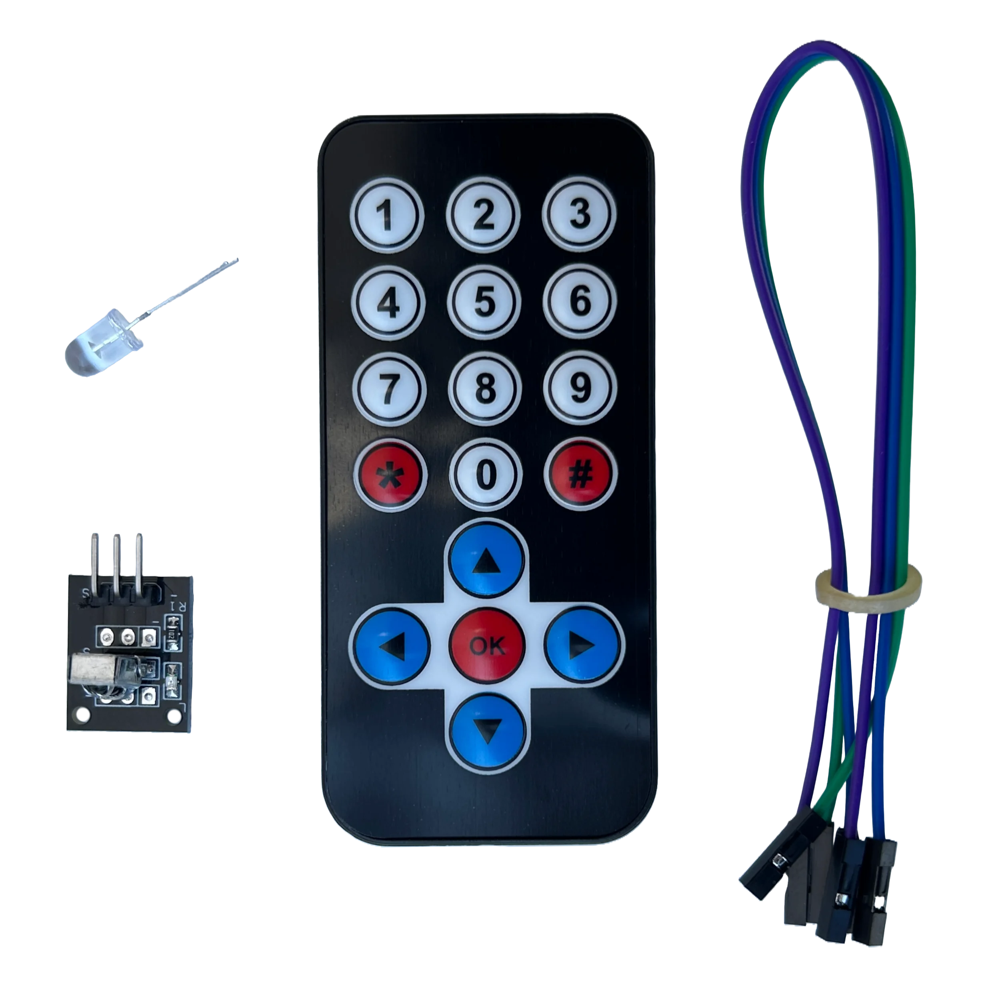
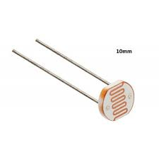
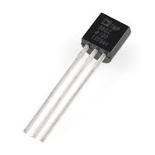
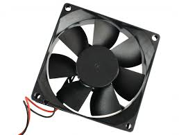

Smart farming
Smart farming, também conhecido como fazenda inteligente,
é um termo utilizado para se referir ao uso de tecnologias e recursos avançados para gerenciar as operações no campo.



Hoje em dia esta cada vez mais comum a tecnologia auxiliando a produção no campo, neste projeto vamos trabalhar com sensor IR para portão eletronico, sensor de
luminosidade para luzes automática, e sensor de temperatura para exastores automáticos
Exaustores automáticos são equipamentos que renovam o ar em ambientes, removendo o ar "velho" e introduzindo ar fresco do exterior.
Eles podem ser encontrados em diferentes formatos e funcionalidades, incluindo opções que se ligam automaticamente
para exaustor iremos usar um cooler de computador

Programação